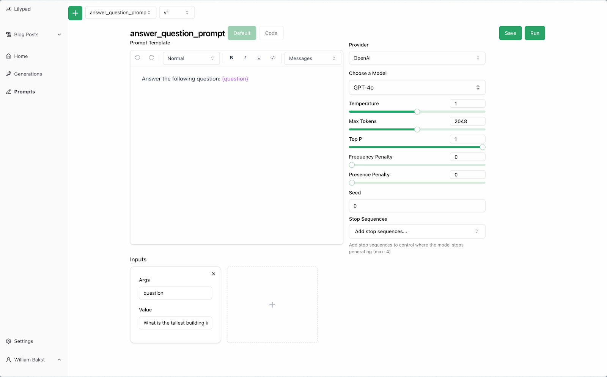
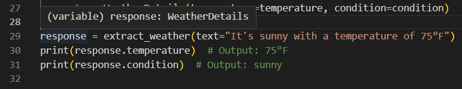
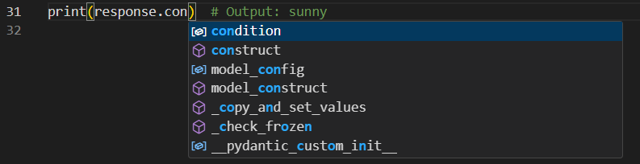

How to Make a Chatbot from Scratch (That Uses LLMs)¶
Chatbots are built in generally one of two ways:
- Using no-code tools, messaging platforms (like Facebook Messenger or WhatsApp), or a chatbot builder like Botpress. This is often the preferred route for non-developers or those who don’t need specific functionality, and allows them to create chatbots quickly and with minimal technical expertise.
- Developing one yourself, which is a great option for those needing custom functionality, advanced integrations, or unique designs.
Building your own chatbot gives you complete control over the bot’s behavior and features, but requires a basic grasp of programming.
As far as programming is concerned, Python’s readability and selection of libraries for working with language models makes it a good choice, although you can build chatbots in any language.
The sheer number of options and approaches for building a chatbot from scratch can seem overwhelming and it can be challenging to even decide where to start.
In this article, we help you navigate the process of building your own LLM-driven chatbot from scratch, including how (and where) to get started, as well as things to look out for when choosing a chat development library.
Finally, we include a step-by-step example of building a basic chatbot and extending it to use tools. We build this using Mirascope, our lightweight, Pythonic toolkit for developing LLM-powered applications that’s designed with software developer best practices in mind.
Getting Started Building a Bot¶
Developing a chatbot for the first time can feel daunting, especially if you’re new to coding.
One thing to decide is how you want it to respond — should you define explicit rules for this or go with artificial intelligence, i.e., an LLM on the backend whose behavior can be guided with a prompt?
As far as rules are concerned, first you need to set up basic natural language processing, i.e., lexical analysis like tokenization and parsing so the chatbot picks up what you’re saying.
You likely won’t need to develop this yourself, though, as plenty of libraries for NLP tasks are out there.
You also need to set up rules allowing it to decide how to respond, like if-then-else statements.
Defining such rules when you’re building a chatbot for the first time certainly is a good learning experience and will help you understand the logic behind a chatbot’s decision-making.
But rule-based chatbots only adequately respond within a narrow scope like answering FAQs, and will be less useful for open-ended conversations.
For broader interactions we recommend building with LLMs, which are trained on large, natural language datasets and can understand and respond without explicit rules.
Beyond that, we advise building a working prototype as a first step to ensure your project will be manageable and constrain what you need to accomplish.
And if you plan on integrating a language model, we suggest learning how to work with APIs and some basic prompting techniques.
Next, we list key factors for choosing a chatbot library.
5 Things to Look For in a Development Library for Creating LLM-Powered Chatbots¶
Look for a library that:
1. Allows You to Easily Switch Between Model Providers¶
The ability to change models or even model providers (e.g., OpenAI to Anthropic) on the fly lets you:
- A/B test to compare responses, latencies, or costs.
- Choose a higher performing version when this becomes available.
- Reduce development overhead.
- Improve maintainability.
- Rapidly prototype.
For instance, Mirascope’s LLM call decorator provides a consistent interface across different AI models and providers so you can easily change from, say, OpenAI:
from mirascope.core import openai
@openai.call("gpt-4o-mini")
def suggest_movie(genre: str) -> str:
return f"Suggest a {genre} movie"
response = suggest_movie("thriller")
original_response = response.response
To, Anthropic:
from mirascope.core import anthropic
@anthropic.call("claude-3-5-sonnet-20240620")
def suggest_movie(genre: str) -> str:
return f"Suggest a {genre} movie"
response = suggest_movie("thriller")
original_response = response.response
All you need to do in this case is change the decorator’s signature and nothing else, as Mirascope’s call decorators abstract away the complexities of provider-specific APIs, ensuring your function logic remains intact.
2. Simplifies Chatbot Development Through Clean Architecture¶
LLM orchestration frameworks, though written in Python or JavaScript, sometimes use homegrown abstractions that resemble data science workflows and neglect native structures already available in those languages.
Such abstractions seem novel at first but quickly become opaque the moment your code (e.g., your chained calls) grows in complexity.
A case in point is LangChain’s runnable, which is a protocol for creating and invoking custom chains and sequencing calls (using the output of one as input to the next).
RunnablePassthrough in particular forwards input data through chains without changes and Runnable.bind allows you to add conditions during chat interactions.
For example, a corporate chatbot might pass a user query such as “What’s the status of my expense reimbursement request?” through a pipeline defined using runnable, where RunnablePassthrough forwards the query unchanged, a prompt formats the query for processing, and runnable.bind(stop="END") configures the language model to stop generating a response once it encounters the keyword "END:”
runnable = (
{"equation_statement": RunnablePassthrough()}
| prompt
| model.bind(stop="END")
| StrOutputParser()
)
print(runnable.invoke("What is the status of my expense reimbursement request?"))
From a developer usability standpoint, this code is somewhat problematic as:
- The pipeline components (
RunnablePassthrough,prompt,model.bind, andStrOutputParser) perform specific roles, but their interaction and the data flow through them (particularly via the pipe operators) aren’t especially intuitive and require you to infer the underlying logic from documentation or trial and error. .bind(stop="END")introduces behavior changes at runtime that aren’t immediately apparent from the code structure.
The time and effort needed for handling any errors will only go up the more components you add to this pipeline.
Why not just use standard Python for such a chain?
from mirascope.core import openai
@openai.call("gpt-4o-mini", call_params={"stop": "END"}, output_parser=str)
def answer_question(question: str) -> str:
return question
response = answer_question("What is the status of my expense reimbursement request?")
print(response)
The above code uses a Python function decorated with @openai.call to directly define LLM interactions, avoiding intermediary abstractions like operators or runnables and simplifying the logic into a single function that includes built-in output parsing.
3. Offers Automatic Prompt Versioning¶
Building an LLM-driven chatbot involves prompt engineering, which helps define the chatbot’s behavior, context, and output style.
You’re constantly refining and experimenting with prompts to get better responses from the language model to address user feedback, adapt to new requirements, or increase performance.
This can leave a lot of changes in its wake and sometimes you want to be able to roll back changes or just document them for future reference.
Prompt versioning typically allows you to:
- Track changes to prompts over time. Not being able to consistently track changes or even implement some semblance of prompt management can lead to your app becoming unmanageable past several versions, as we found out when developing with the earliest versions of the OpenAI SDK.
- Revert to previous versions. This can be useful for overcoming errors or if, after some experimentation, you find that a previous prompt yielded better results.
- Facilitate collaboration, even with non-technical team members (who might be domain experts necessary for successful prompt engineering).
- Provide an audit trail of who made changes, when they were made, and why.
- Manage code without worrying about manually versioning using Git for every little change.
Lilypad, which works with Mirascope, is an open source prompt engineering framework that automatically versions your code every time you make an LLM call. You can use Lilypad by adding the lilypad.generation() decorator to any Python function:
import lilypad
from openai import OpenAI
client = OpenAI()
@lilypad.generation()
def answer_question(question: str) -> str:
completion = client.chat.completions.create(
model="gpt-4o-mini",
messages=[{"role": "user", "content": question}],
)
return str(completion.choices[0].message.content)
if __name__ == "__main__":
lilypad.configure()
answer = answer_question("What is the tallest building in the world?")
In the example above, the function answer_question gets versioned and a trace is collected against that version to keep a full record of every call, such as the exact input prompt sent to the LLM, outputs generated, etc.
This makes it easier to troubleshoot, refine prompts, and analyze performance trends over time.
Lilypad supports collaboration between technical and non-technical users via its Playground.
Here, non-technical users can work with prompts, modify them, etc., without touching the underlying code and ensuring that those closest to a particular use case can effectively shape the chatbot’s behavior:

4. Provides Easy Tool Integration to Extend the Chatbot’s Capabilities¶
Different types of chatbots that just answer questions are fine and good. However, you might want to let them interact with external systems, like do web searches or connect with databases.
You do this by giving them a list of possible functions they might invoke if needed. This turns the chatbot into a bona fide agent acting on your behalf to do tasks as part of a greater objective.
Note that here, we’re not talking about the chatbot actually reaching out on its own to do web searches on Bing.
But it’s doing the next best thing: it feeds your query to the LLM, which decides which function or tool to call, and which responds with JSON schema (or some other structured output) for the function call to make for, e.g., the Bing Web Search API.
This piece of JSON is an instruction (including arguments and parameters) for how a function would call the API.
All this might seem a little complex, so if you intend on extending the functionality of your chatbot with tools you might consider using a library that simplifies the process where feasible.
For instance, many libraries require you to hand-code definitions of JSON schema for tool calling, which can be tedious and error prone.
Mirascope automatically generates the necessary function calling definitions from a class that you can create that extends its BaseTool class.
This Python class lets you specify the tool you want to use in your LLM application by defining attributes using the class’ (Pydantic) Field, which becomes the parameters of the tool.
Mirascope uses this class definition to automatically generate the JSON schema needed for tool calling.
It can also generate definitions from any docstring you specify in that class, if you use Google-, ReST, Numpydoc-, or Epydoc-style docstrings. You can use BaseTool with or without docstrings.
The following example demonstrates a custom tool (GetArtGalleryInfo) that extends BaseTool and fetches art gallery information using static logic, comparing gallery names against predefined cases like “The Louvre” or “The Metropolitan Museum of Art.”
If the user asks “Tell me about the Louvre,” the LLM uses the tool to formulate a precise response by invoking the GetArtGalleryInfo tool, which retrieves specific information about the Louvre and then integrates this information into the final response provided to the user:
from mirascope.core import BaseTool, openai, prompt_template
from pydantic import Field
# Function to retrieve information about art galleries
def get_art_gallery_info(gallery: str) -> str:
# Assume this function does not have a docstring
if gallery == "The Louvre":
return f"{gallery} is a world-famous museum in Paris, France, known for its iconic art collection including the Mona Lisa."
elif gallery == "The Metropolitan Museum of Art":
return f"{gallery} is located in New York City and houses an extensive collection of art from around the world."
else:
return f"I'm sorry, I don't have information on {gallery}."
# Class to handle art gallery queries
class GetArtGalleryInfo(BaseTool):
"""Get information about a specific art gallery."""
gallery: str = Field(
...,
description="The name of the art gallery, e.g., The Louvre.",
)
def call(self):
return get_art_gallery_info(self.gallery)
# Mirascope integration for the chatbot
@openai.call("gpt-4o", tools=[GetArtGalleryInfo])
@prompt_template("Tell me about the art gallery {gallery}")
def art_gallery_info(gallery: str): ...
# Example chatbot interaction
response = art_gallery_info("The Louvre")
if tool := response.tool:
print(tool.call())
# > The Louvre is a world-famous museum in Paris, France, known for its iconic art collection including the Mona Lisa.
Note that in the LLM call, tools[] specifies the list of tools from which the language model can choose.
5. Validates Language Model Outputs¶
Validating LLM inputs and outputs help prevent inaccurate or unpredictable responses that are reflected in the chatbot’s answers.
Many libraries, including Mirascope, use Pydantic’s BaseModel for type safety of prompts to ensure the data received by the LLM aligns with specific types and constraints.
For example, below we define a class BookRecommendationInput that extends BaseModel to validate user input for a book recommendation query.
The moment this class is instantiated, values for the fields genre and audience will be constrained by the type annotations and validation rules defined in class, such as required types (str), minimum length (min_length=3 for genre), and the presence of mandatory fields.
from typing import Annotated
from mirascope.core import openai
from pydantic import Field, ValidationError, validate_call
# Define the function to call the LLM with validated inputs
@openai.call("gpt-4o-mini")
@validate_call # ensure the arguments are valiadated
def recommend_book(genre: Annotated[str, Field(min_length=3)], audience: str) -> str:
return f"Recommend a book in the {genre} genre for {audience}."
# Example usage
def main():
try:
# If validation passes, the LLM call will be made
response = recommend_book("fantasy", "young adult")
print(response)
except ValidationError as e:
# Handle validation errors
print(f"Validation Error: {e.json()}")
if __name__ == "__main__":
main()
Mirascope also validates LLM outputs via its response model, which uses Pydantic’s BaseModel to ensure outputs adhere to a predefined structure.
As shown below, you define a response_model as a Pydantic BaseModel and add it to an LLM call to validate the output.
from pydantic import BaseModel
from mirascope.core import openai, prompt_template
class WeatherDetails(BaseModel):
temperature: str
condition: str
@openai.call(model="gpt-4o-mini", response_model=WeatherDetails)
@prompt_template("Extract the weather details from this description: {text}")
def extract_weather(text: str):
...
response = extract_weather(text="It's sunny with a temperature of 75°F")
print(response.temperature) # Output: 75°F
print(response.condition) # Output: sunny
This ensures the output conforms to the structure and types (fields) defined in WeatherDetails.
Note that the response model implicitly defines and enforces the return type of the function the call is decorating, namely, extract_weather, which you can verify in your IDE before runtime to make sure everything’s correct before sending the prompt:

It also shows auto-suggestions:

Mirascope is also compatible with the latest version of Pydantic (V2).
How to Make an LLM-Driven Chatbot that Searches the Web¶
We split this tutorial into two parts:
- First, we show you how to build a simple chatbot in Python (without a knowledge base) featuring simple conversational interactions with users via a loop.
- We then give the bot a search tool to go search the web autonomously (if needed)
These steps are based on Mirascope’s tutorial where we show you how to add even more advanced features to the chatbot.
Set Up the Environment¶
Before running these tutorials, we install Mirascope and its dependencies:
import os
os.environ["OPENAI_API_KEY"] = "YOUR_API_KEY"
# Set the appropriate API key for the provider you're using
These install the Mirascope library with OpenAI support and configure your environment with your OpenAI key.
Build a Basic Chatbot¶
First we build the basic version of the AI assistant with several features:
- Enables conversation flow through a
historyattribute. - Dynamic prompting, using Mirascope’s
@prompt_templatedecorator to inject conversation history and the user’s query into the prompt. - Streaming responses for a smoother user experience.
- It runs as an interactive loop.
1. Import Mirascope and Pydantic Modules¶
As you’ll see later on, we use BaseMessageParam as our message object and Pydantic’s BaseModel to make sure the message history is always a list of specific kinds of messages for a better customer experience and in order to avoid errors.
2. Define a Chatbot Class¶
We create Chatbot to define how the chatbot works and to preserve state (i.e., to remember past interactions):
# Define a Chatbot class that uses Pydantic for validation
class Chatbot(BaseModel):
# Attribute to store the conversation history, containing both user and helper messages
history: list[openai.OpenAIMessageParam] = []
@openai.call(model="gpt-4o-mini", stream=True)
@prompt_template(
"""
SYSTEM: You are a useful helper.
MESSAGES: {self.history}
USER: {question}
"""
)
def _call(self, question: str): ...
# Main loop to handle user interaction
def run(self):
while True:
question = input("(User): ")
# Exit condition: If the user types "quit" or "exit", terminate the loop
if question in ["quit", "exit"]:
print("(Bot): Have a great day!")
break
# Call the LLM with the user's question
stream = self._call(question)
print(f"(User): {question}", flush=True)
# Begin streaming the LLM's response in real-time
print("(Bot): ", end="", flush=True)
for chunk, _ in stream:
print(chunk.content, end="", flush=True)
print("")
if stream.user_message_param:
self.history.append(stream.user_message_param)
self.history.append(stream.message_param)
Chatbot().run()
In the code above, we define:
- A list structure,
history, to maintain our conversation usingOpenAIMessageParamto store LLM-compatible messages, which acts as a type alias forBaseMessageParamand OpenAI's specific message types. - The call decorator
@openai.calldirects the LLM to use GPT-4o Mini and enables streaming. @prompt_templateis a multi-role prompt that specifiesSYSTEMandUSER. These roles guide the behavior of the chatbot in conversation, i.e., SYSTEM defines the overarching behavior, tone, or rules that the chatbot follows and USER represents input from the bot’s user.- The
runmethod handles user input (quitting if the user typesquitorexit) and calls the language model viastream = self._call(question); the response is also streamed back chunk by chunk enabling real time display of the bot's reply and both the user’s input (user_message_param) and the bot's response (message_param) are appended to thehistory.
3. Run the Chatbot¶
Finally, we instantiate the chatbot class and start the interactive loop using the run method:
The conversation might look like this:
(User): Hello, who are you?
(Bot): I am a useful helper here to answer your questions. How can I assist you today?
(User): What is the capital of France?
(Bot): The capital of France is Paris.
(User): Can you recommend a good book?
(Bot): Sure! "To Kill a Mockingbird" by Harper Lee is a classic and highly recommended.
(User): Thanks! That’s all for now.
(Bot): You’re welcome! Have a great day!
Extend the Chatbot’s Capabilities with Tools¶
Below, we add search capabilities to our basic chatbot, using the DuckDuckGo Python library.
1. Install and Import Libraries for Web Searches, Parsing, and Validating¶
Below, we install packages for DuckDuckGo, Beautiful Soup (library for parsing HTML and XML documents), and the requests library, which simplifies HTTP requests, such as fetching webpage content:
Next, we import the modules we need, such as DDGS (a DuckDuckGo search API wrapper for retrieving search results programmatically) and Pydantic modules for validating inputs for the WebSearch class we’ll define:
import requests
from bs4 import BeautifulSoup
from duckduckgo_search import DDGS
from pydantic import BaseModel, Field
2. Define a WebSearch Class¶
This class represents a web search tool that leverages the DuckDuckGo Search API for retrieving and parsing information from webpages related to a specific query.
class WebSearch(openai.OpenAITool):
"""Search the web for the given text and parse the paragraphs of the results."""
query: str = Field(..., description="The text to search for.")
def call(self) -> str:
"""Search the web for the given text and parse the paragraphs of the results.
Returns:
Parsed paragraphs of each of the webpages, separated by newlines.
"""
try:
# Search the web for the given text
results = DDGS(proxy=None).text(self.query, max_results=2)
# Parse the paragraphs of each resulting webpage
parsed_results = []
for result in results:
link = result["href"]
try:
response = requests.get(link)
soup = BeautifulSoup(response.content, "html.parser")
parsed_results.append(
"\n".join([p.text for p in soup.find_all("p")])
)
except Exception as e:
parsed_results.append(
f"{type(e)}: Failed to parse content from URL {link}"
)
return "\n\n".join(parsed_results)
except Exception as e:
return f"{type(e)}: Failed to search the web for text"
Going through the code:
WebSearchcreates a custom tool by extending Mirascope’sopenai.OpenAITool.- The user’s
queryis validated with Pydantic’sField, ensuring it’s mandatory and explicitly described. - We execute searches using
call(), which retrieves web content and parses paragraph text. It returns a formatted string containing the content of the found webpages. resultsqueries DuckDuckGo forquerytext and limits the results to two links for simplicity.- We iterate through the results using a
forloop and extract the URL from every result, and fetch and parse webpage content withresponseandsoup. - We extract paragraph text using
"\n".join()and aggregate all the results usingreturn "\n\n".join; the code includes some typical Python error handling.
3. Update the Mirascope Chatbot¶
Below we add our web search tool to the parameter list of @openai.call, enabling the chatbot to do web searches when necessary.
We also add the _step() method, which we explain in more detail below:
class Chatbot(BaseModel):
history: list[BaseMessageParam | openai.OpenAIMessageParam] = []
@openai.call(model="gpt-4o-mini", stream=True, tools=[WebSearch])
@prompt_template(
"""
SYSTEM:
You are an expert web searcher.
Your task is to answer the user's question using the provided tools.
You have access to the following tools:
- `WebSearch`: Search the web for information.
- `RequestAssistance`: Request assistance from a human expert if you do not
know how to answer the question.
Once you have gathered all of the information you need, generate a writeup that
strikes the right balance between brevity and completeness. The goal is to
provide as much information to the writer as possible without overwhelming them.
MESSAGES: {self.history}
USER: {question}
"""
)
def _call(self, question: str | None = None): ...
def _step(self, question: str | None = None):
response = self._call(question)
tools_and_outputs = []
for chunk, tool in response:
if tool:
tools_and_outputs.append((tool, tool.call()))
else:
print(chunk.content, end="", flush=True)
if response.user_message_param:
self.history.append(response.user_message_param)
self.history.append(response.message_param)
if tools_and_outputs:
self.history += response.tool_message_params(tools_and_outputs)
return self._step()
return response.content
def run(self):
while True:
question = input("(User): ")
if question in ["quit", "exit"]:
print("(Helper): Have a great day!")
break
print("(Helper): ", end="", flush=True)
self._step(question)
print("")
The _step() method processes a single user request by calling the LLM, handling tool invocations, and iteratively refining the response by re-processing the conversation until a final response is generated.
The _call() method both generates a prompt with the query and conversation history and passes it to the LLM, which produces a response.
The response itself may consist of text chunks (the helper’s reply) or tool invocations for web searches — each of these cases is handled differently and the conversation history is updated. The LLM uses web searches to generate a human-readable reply, which is streamed back to the user.
4. Run the Chatbot¶
After updating the code for the new web search tool, we start the interactive loop using the run method:
We’d get a conversation that looks like this:
(User): What are the main benefits of quantum computing?
(Bot): Let me look that up for you. One moment...
(Bot): Here’s what I found:
1. Unparalleled computational power:
- Quantum computers can solve certain problems much faster than classical computers. For example, they excel at simulating quantum systems, which is critical for material science and chemistry.
2. applications in cryptography:
- Quantum computing has the potential to break current encryption methods (like RSA) but also to create secure quantum cryptographic systems resistant to hacking.
3. Optimization solutions:
- Quantum algorithms, such as the Quantum Approximate Optimization Algorithm (QAOA), are designed to tackle complex optimization problems in logistics, finance, and supply chain management.
4. Advances in Machine Learning:
- Quantum computing can accelerate machine learning tasks by quickly analyzing large datasets and optimizing algorithms.
Let me know if you want to dive deeper into any of these areas!
Create Smart Interactions with AI-Powered Chatbots¶
Build AI-driven solutions that engage users naturally, make you more productive, and provide accurate, real-time support. Our streamlined tools make it easy to create smarter interactions and improve user satisfaction.
Want to learn more about Mirascope’s tools for building AI agents? You can find Mirascope code samples both in our documentation and our GitHub repository.